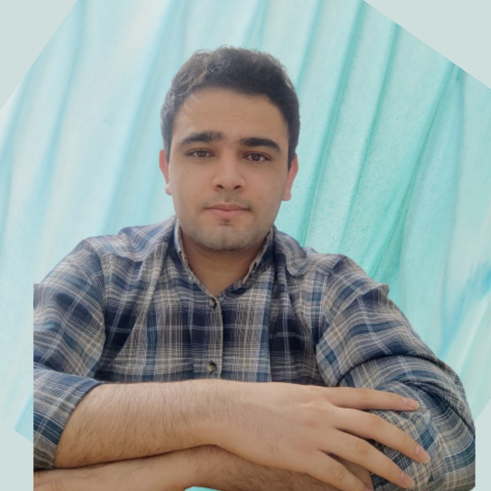
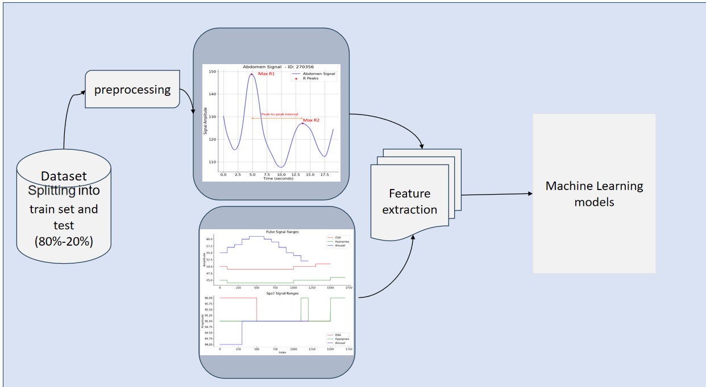

As a student deeply passionate about the field of Artificial Intelligence, I have a particular focus on Deep Learning and Machine Learning, with a strong interest in their applications in Bio-signal Processing and Bio-inspired Computing. I am currently in the 4th semester of my master’s program at Sharif University in Iran.
Description: Another ongoing project involves the diagnosis of sleep disorders using biosignals and machine learning techniques. Sleep disorders can have a significant impact on an individual's health and quality of life. This project aims to develop algorithms and models that can analyze biosignals to detect and diagnose various sleep disorders, facilitating early intervention and treatment.
Analysis of Sensory Data in Apnea Patients to Aid in Heterogeneous Control of Breathing Aid Pumps
My Master's thesis, conducted at Sharif University of Technology in Tehran, Iran, under the guidance of Dr. Jahed and Dr. Khalaj, is centered around the critical area of improving treatment for apnea patients. This research endeavors to enhance the care and management of apnea patients through a multidisciplinary approach that merges biomedical engineering with artificial intelligence (AI) methodologies.
The project commenced in July 2022 and is currently ongoing. The primary objectives and achievements include:
In summary, this research project at Sharif University of Technology represents a significant effort to improve the management of apnea patients by harnessing the power of data analysis and AI-driven insights. It aims to pave the way for more effective and personalized control of breathing aid pumps, ultimately enhancing the quality of life for individuals affected by apnea.
More information: View my Github